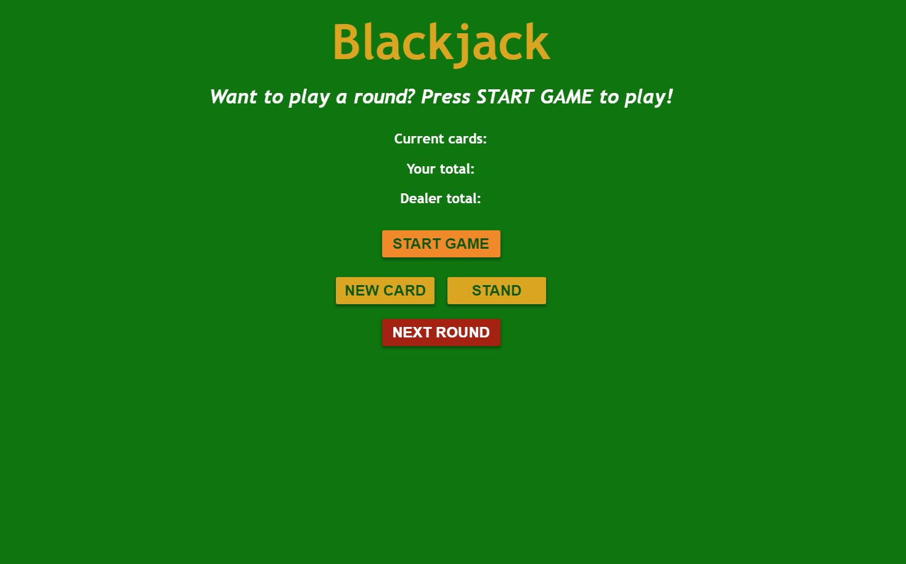

(Scroll through the projects and click any screenshot to see the live website!)
For this project I created an FAQ card that has questions displayed on clickable drop down buttons. When you click on the button, the answer folds out while pushing the other buttons out of the way. It is a very slick design and the smooth drop down button transition, made with Javascript, makes clicking the buttons satisfying.
This is an app that began with a super simple tutorial about pushing random numbers into an array and displaying them on a page, but I expanded it into a fully playable blackjack game against a dealer. I included a point system which makes it pretty addicting to see how high you can get your score! There is a lot going on under the hood to make this app possible including manipulating randomness and breaking up complex logic into smaller readable functions.
This flashcards app was my first deep dive into building a practical application using a React front-end that fetches data from an API. Hosting this app was actually quite the challenge because the API where the flashcards are stored is on JSON server. After extensive troubleshooting I stumbled upon the solution of hosting the client on Vercel and the server on Heroku. The UI was designed with a combination of Bootstrap and vanilla CSS. I really like Bootstrap for the quick buttons and responsive form fields, but dislike it when it comes to specific layout needs. I'd rather code a quick flexbox layout with necessary media queries, rather than messing around with pre-made Bootstrap flex classes.
This LoopStudios landing page was the first ever page I tried designing! It definitely didn't look like this the first time I pushed the code to GitHub, but I kept coming back to improve it and now it's somewhat of a playground I can use for trying new techniques that I learn! Currently there's lots of cool design elements to catch your eye if you take your time browsing though the site!
For this specific project, it wasn't so much about the page layout (which did still turn out looking good), but it was more about the fixed bottom navigation bar that you see while browsing the site on mobile! A popular way to navigate on mobile apps like Instagram, I wanted to give it a shot being used as a website nav bar. I'm still trying to decide if I like it!
This landing page features a dark mode button which is able to remember if you last left the page on dark or light mode! This works because the button interacts with your local storage and sees what the previously selected mode on your computer was. Personally I prefer dark mode websites, so I had a lot of fun making this one and decided to screen shot it in dark mode.